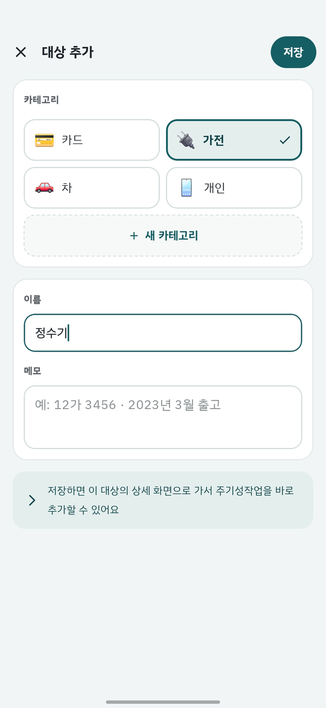
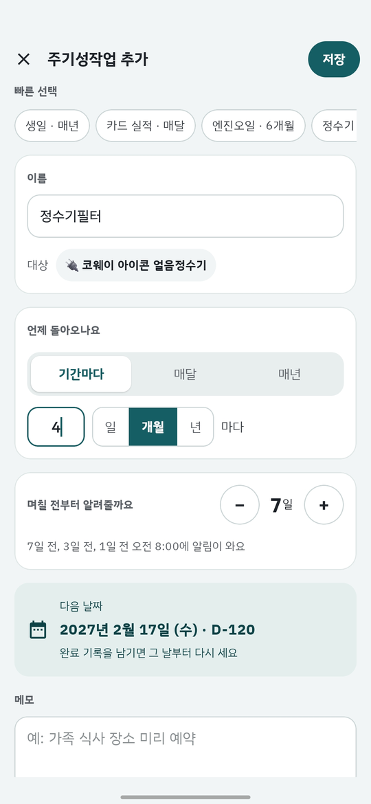
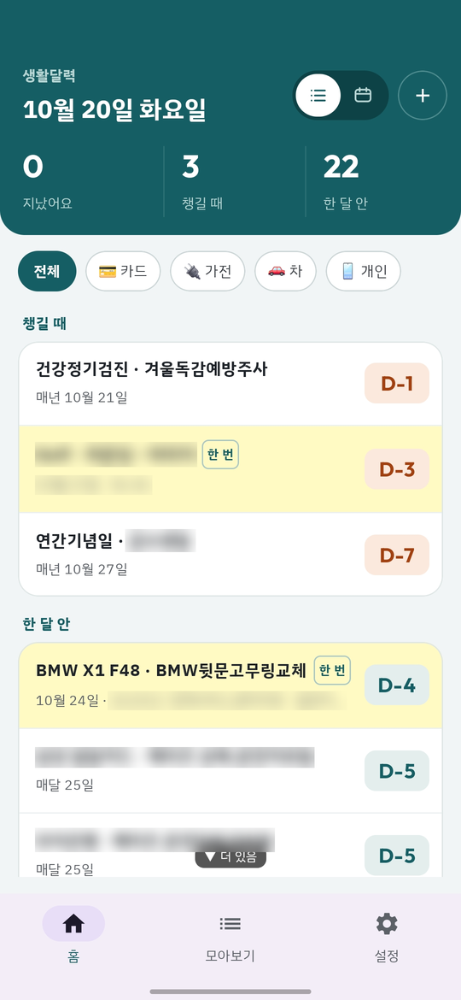
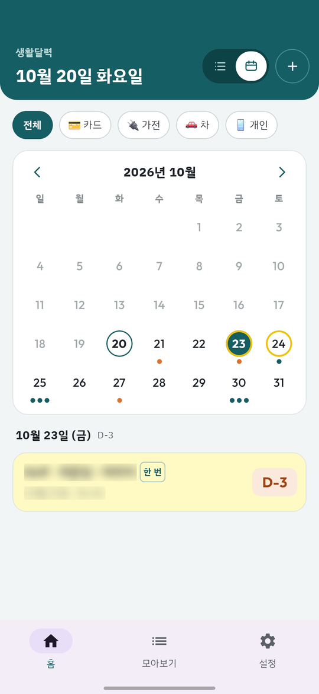
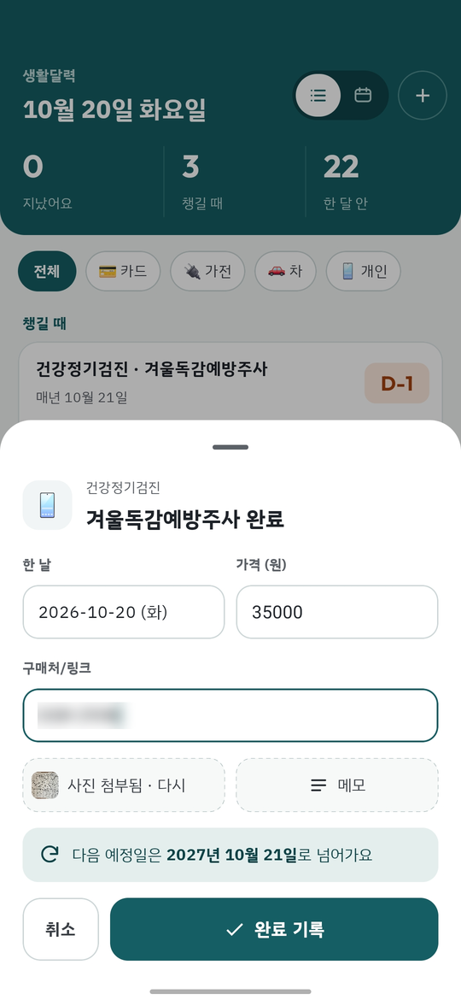
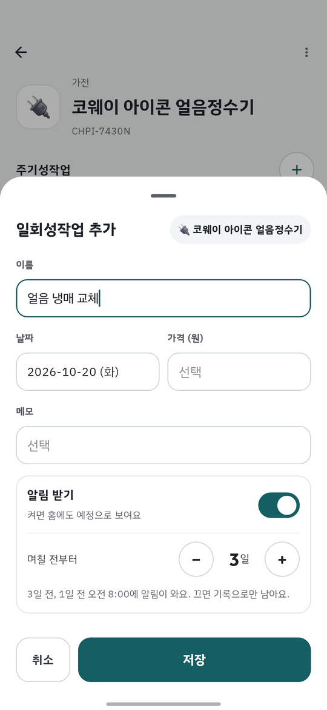
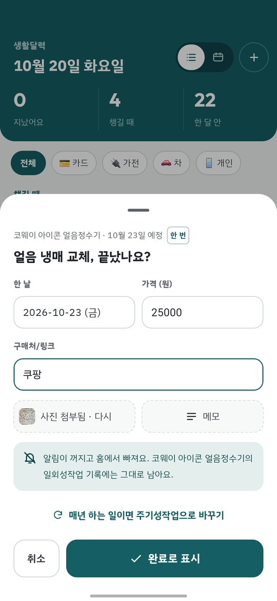
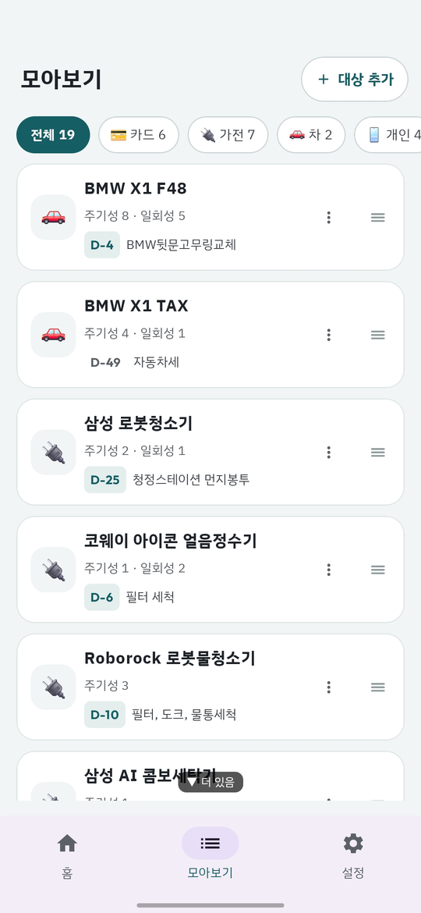
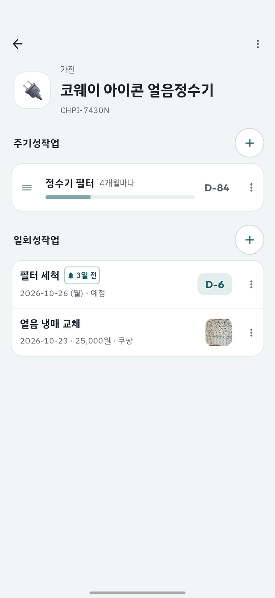
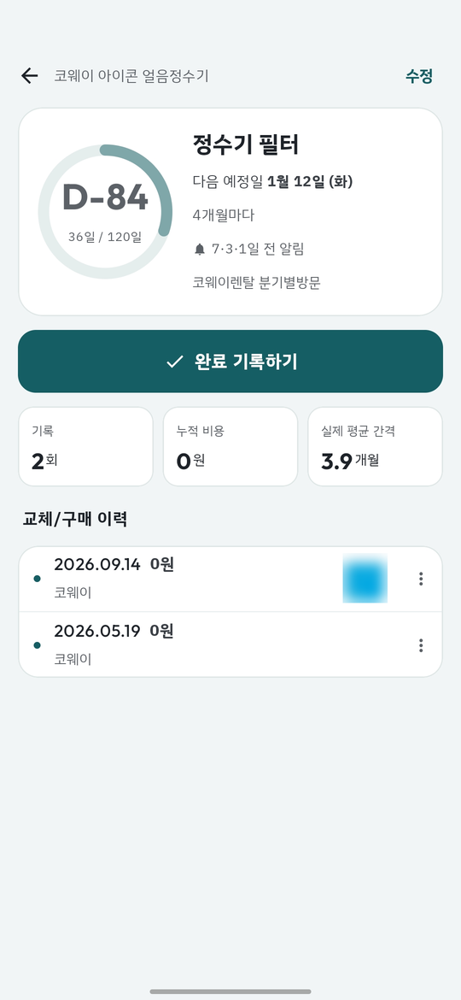

집·자동차·카드·가족처럼 반복해서 챙겨야 하는 일(정수기 필터 교체, 자동차보험 갱신, 카드 실적, 생일…)을 등록해 두면
다음 날짜를 알아서 계산해서 홈에 D-day로 보여주고, 날짜가 다가오면 알림으로 알려주는 앱이에요.
아래 순서 그대로 따라 하면 5분 안에 첫 알림을 걸어 둘 수 있어요.
이 앱이 다른 앱과 다른 점
POINT 1
내 폰 안에만 저장돼요
계정도, 서버도, 광고도 없어요. 앱에는 인터넷 권한 자체가 없어서 등록한 내용이 폰 밖으로 나가지 않아요.
POINT 2
다음 날짜를 알아서 계산해요
"6개월마다", "매달 25일", "매년 음력 3월 5일"처럼 주기를 한 번 정해 두면, 일을 마칠 때마다 다음 날짜가 자동으로 넘어가요.
음력 날짜는 그 해의 양력 날짜로 알아서 바꿔 줘요.
알아둘 점
백업은 직접 해야 해요
앱을 지우거나 폰을 바꾸면 기록이 같이 사라져요(구글 자동 백업도 꺼져 있어요). 설정 → 백업 파일 만들기로 가끔 파일을 만들어 두세요.
영수증 사진은 백업 파일에 들어가지 않아요.
0. 설치하기
릴리즈 페이지의 Assets에서 app-debug.apk 파일을 폰에 다운로드해요. (안드로이드 8.0 이상에서 쓸 수 있어요.)
파일을 눌렀을 때 "출처를 알 수 없는 앱" 경고가 뜨면 설치 허용을 눌러요 (앱스토어를 거치지 않고 직접 설치하는 파일이라 뜨는 정상적인 경고예요).
설치가 끝나면 생활달력 아이콘을 눌러 실행해요. 알림 권한을 물어보면 허용해 주세요 — 챙길 날짜가 다가올 때 알림으로 알려주는 핵심 기능이에요.
이전 버전 위에 그대로 덮어 설치하면 등록한 대상·작업·기록이 그대로 유지돼요. 업데이트 전에 아래 "0-1"대로 백업 파일을 한 번 만들어 두면 더 안심이에요.
0-1. 백업하고 복원하기
폰을 바꾸거나 앱을 다시 설치할 때를 위해 백업 파일을 만들어 두세요. 대상, 주기성작업, 일회성작업, 이력이 파일 하나에 통째로 들어가요.
백업 — 아래 탭의 설정에서 "백업 파일 만들기"를 눌러요. 저장할 위치(예: 내 파일의 Download 폴더, 구글 드라이브)를 고르면 k_home_note_backup_날짜_시간.db 파일이 만들어지고, 그 줄에 "마지막 ○월 ○일"이 표시돼요.
복원 — 새 폰이나 다시 설치한 앱에서 설정 → "백업에서 복원"을 눌러 그 파일을 고르고, "백업 파일로 복원할까요?" 창에서 "복원"을 눌러요. 앱이 저절로 다시 켜지면서 예전 기록이 나타나요.
주의
복원은 "덮어쓰기"예요. 지금 폰에 있는 내용이 전부 백업 파일 내용으로 바뀌고 되돌릴 수 없어요.
앱을 삭제하면 폰 안의 기록이 모두 사라져요. 백업 파일이 폰 밖(구글 드라이브, PC, 메신저의 "나에게 보내기" 등)에도 있는지 확인한 뒤에 삭제하세요.
영수증 사진은 백업 파일에 들어가지 않아요. 복원하면 사진 자리는 비어 있을 수 있어요. 기록(날짜·가격·구매처·메모)은 그대로 돌아와요.
오래된 버전에서 만든 백업 파일도 복원할 수 있어요. 복원하고 앱이 다시 켜질 때 최신 구조로 자동으로 맞춰져요.
STEP 1
먼저 알아둘 세 가지 말
말
뜻
예
대상
챙길 일이 달려 있는 물건·사람·계약
정수기, 자동차, 신한카드, 어머니
주기성작업
대상에 달린, 반복해서 하는 일
필터 교체(4개월마다), 보험 갱신(매년), 생신(매년 음력)
일회성작업
대상에 달린, 한 번만 하는 일
보일러 점검 예약, 수리, 신청 마감
대상을 먼저 만들고, 그 안에 주기성작업과 일회성작업을 넣는 순서예요. 앱을 처음 켜면 가전 · 자동차 · 카드 카테고리가 기본으로 들어 있어요.
STEP 2
대상 만들기
홈 오른쪽 위 ＋ 버튼을 누르고 "새 대상 만들기"를 눌러요. (아래 탭 모아보기의 "대상 추가" 버튼으로도 만들 수 있어요.)
카테고리를 골라요. 목록에 없으면 맨 아래 "+ 새 카테고리"로 이모지와 이름을 직접 만들 수 있어요.
이름을 적어요. (예: 다이슨 V15, 신한카드, 우리 가족)
메모는 선택이에요. (예: 12가 3456 · 2023년 3월 출고)
저장하면 그 대상의 상세 화면으로 바로 이동해서 주기성작업을 이어서 추가할 수 있어요.

대상 추가 — 카테고리, 이름, 메모
STEP 3
주기성작업 추가하기
대상 상세 화면의 주기성작업 제목 오른쪽 ＋를 누르면 입력 화면이 열려요.
빠른 선택 — 맨 위 칩(생일 · 카드 실적 · 엔진오일 · 정수기 필터 · 에어컨 필터 · 자동차보험)을 누르면 이름·주기·알림이 한 번에 채워져요. 고쳐서 써도 돼요.
이름 — 예: 엔진오일 교체, 어머니 생신.
언제 돌아오나요 — 세 가지 중에서 골라요.
기간마다 — "6개월마다"처럼 숫자와 단위(일 · 개월 · 년). 마지막으로 한 날부터 그 기간 뒤가 다음 날짜예요. 계산은 한 달 = 30일, 한 해 = 365일 기준이라, 4개월은 정확히 120일 뒤예요. 달력의 같은 날짜로 맞추고 싶다면 아래 "매달 / 매년"을 쓰세요.
매달 — "매달 25일"처럼 날짜 고정. 그 달에 없는 날(예: 2월 30일)은 그 달의 마지막 날로 맞춰져요.
매년 — "매년 3월 5일". 양력 / 음력을 고를 수 있어서 음력 생일·제사도 그 해의 양력 날짜로 알아서 바꿔 줘요.
며칠 전부터 알려줄까요 — −/+로 정해요. 예를 들어 14일이면 14일 전 · 7일 전 · 3일 전 · 1일 전, 이렇게 절반씩 줄여 가며 알려줘요. 0일이면 당일에만 알려줘요.
다음 날짜 — 위에서 정한 값으로 계산한 다음 날짜와 D-day를 미리 보여줘요. 맞는지 여기서 확인하고 저장하세요.
메모는 선택이에요.
TIP
아직 한 번도 안 한 일이라면 등록한 날부터 주기가 시작돼요. 이미 한 적이 있다면 등록한 뒤 이력 기록(아래 STEP 5)으로 그 날짜를 남겨 두세요.

주기성작업 추가 — 빠른 선택, 주기, 알림
STEP 4
홈 화면 읽기
맨 위 요약 3칸 — 지났어요(날짜가 지난 일) · 챙길 때(알림 받기로 정한 기간에 들어온 일) · 한 달 안. 칸을 누르면 목록에서 그 구간으로 바로 스크롤돼요.
구간별 카드 — 목록은 급한 순서로 지났어요 → 챙길 때 → 한 달 안 → 석 달 안 → 나중에 카드에 묶여 나와요. 줄마다 "대상 · 작업 이름"(예: 정수기 · 필터 교체), 그 아래 주기와 지난번 날짜, 오른쪽에 D-day 배지가 있어요. 급한 것만 주황색으로 눈에 띄고, 멀수록 흐려져요.
D+3D-5D-20
카테고리 칩 — 요약 아래 칩으로 가전·자동차·카드처럼 한 종류만 모아 볼 수 있어요.
연한 노랑 줄(이름 옆에 한 번 태그)은 일회성작업이에요.
줄을 가볍게 누르면 일을 마쳤다는 기록을 남기고(STEP 5), 꾹 누르면 그 작업을 고칠 수 있어요.
가볍게 누르기
꾹 누르기
주기성작업
이력 기록 시트
주기성작업 수정 화면
일회성작업
"완료로 표시" 시트
일회성작업 수정 시트
달력으로 보기
헤더 오른쪽의 목록 / 달력 버튼으로 홈을 월간 달력으로 바꿀 수 있어요. 고른 보기는 앱을 껐다 켜도 기억돼요.
날짜 밑 점이 그날 챙길 일이 있다는 표시예요 (지남·알림 기간은 주황, 그 외는 청록). 일회성작업이 있는 날은 노란 원으로 둘러싸요.
날짜를 누르면 아래에 그날 작업이 홈과 같은 줄로 나오고, 거기서도 똑같이 누르거나 꾹 눌러서 쓸 수 있어요. 카테고리 칩도 그대로 적용돼요.
달력에는 각 작업의 다음 예정일 하나만 찍혀요. 매달·매년 반복되는 일의 먼 미래 날짜까지 미리 깔아 주지는 않아요.

홈 — 목록 보기

홈 — 달력 보기
STEP 5
일을 마치면 이력 기록하기
홈에서 주기성작업 줄을 가볍게 누르면 이력 기록 시트가 열려요. (대상 상세의 주기성작업을 열고 이력 기록하기 버튼을 눌러도 돼요.)
한 날(기본은 오늘)과 가격을 정해요.
구매처/링크를 적을 수 있어요. (예: 쿠팡, 다이소, 구매 링크)
영수증 사진 버튼으로 사진을 골라 붙이고, 메모 버튼을 누르면 메모 칸이 펼쳐져요. 모두 선택이에요.
시트 아래에 "다음 예정일은 ○○로 넘어가요"가 미리 보여요. 이력 기록을 누르면 그 날짜로 넘어가고 홈에서도 새 D-day로 바뀌어요.
기록은 주기성작업 상세 화면의 이력에 쌓이고, 각 줄의 ⋮ 메뉴에서 고치거나 지울 수 있어요.
TIP
"6개월마다" 같은 기간 주기는 마지막으로 한 날에서 다시 6개월을 세요. 반대로 "매달 25일"처럼 날짜가 고정된 일은 며칠 일찍 하든 늦게 하든 다음 25일로 정확히 넘어가요.

이력 기록 — 가격·구매처·영수증·메모
STEP 6
일회성작업 추가하고 끝내기
대상 상세 화면의 일회성작업 제목 오른쪽 ＋, 또는 홈 ＋ → 대상 고르기 → 일회성작업 추가로 열어요.
이름 · 날짜 · 가격 · 메모를 적어요. 이미 끝낸 일을 기록만 해 둘 수도 있고, 앞으로 할 일의 예정일로 쓸 수도 있어요.
알림 받기 스위치를 켜면 며칠 전부터 알려줄지 정할 수 있고, 홈에도 연한 노랑 줄로 나타나요. 끄면 기록으로만 남고 홈에는 보이지 않아요.
일을 마쳤으면 홈에서 그 줄을 가볍게 눌러요. "OO, 끝났나요?" 시트가 열려요.
실제로 한 날 · 가격 · 구매처/링크 · 영수증 사진 · 메모를 남기고 완료로 표시를 눌러요.
알림이 꺼지고 홈에서는 빠지지만, 대상 상세의 일회성작업 기록에는 그대로 남아요 (구매처와 사진 썸네일도 같이 보여요).
해마다 하는 일이었다면 시트의 "매년 하는 일이면 주기성작업으로 바꾸기"를 눌러 이름이 채워진 주기성작업 추가 화면으로 넘어갈 수 있어요.

일회성작업 추가 — 알림 받기

완료로 표시 — 구매처·영수증 사진
STEP 7
대상 모아보기와 상세 화면
아래 탭 모아보기에는 대상이 카드로 나열돼요. 카드마다 "주기성 N · 일회성 M"과 가장 가까운 작업의 D-day가 보이고, 오른쪽 ≡를 꾹 눌러 드래그하면 순서를 바꿔요. ⋯ 메뉴에서 대상을 수정 / 삭제할 수 있어요.
카드를 누르면 대상 상세 화면이에요.
주기성작업 카드 — 줄마다 이름, 주기, 진행 막대, D-day 배지가 있어요. 줄을 누르면 주기성작업 상세, ≡로 순서 바꾸기, ⋮로 수정/삭제.
일회성작업 카드 — 알림이 켜진 것은 🔔 N일 전 태그와 D-day 배지가 붙고, 가볍게 누르면 "완료로 표시"예요. 끝난 것은 날짜·가격·구매처·사진이 함께 보여요. 사진 썸네일을 누르면 크게 열려요.
오른쪽 위 ⋯ 메뉴에서 대상 수정 / 대상 삭제. 주기성작업이 남아 있는 대상은 지울 수 없고(먼저 주기성작업을 지워야 해요), 지울 때는 그 대상의 일회성작업 기록도 함께 지워진다는 확인 창이 떠요.
주기성작업을 누르면 상세 화면이 열려요. 진행 링과 D-day, 다음 예정일, 알림 시점이 맨 위에 있고, 기록 횟수 · 누적 비용 · 실제 평균 간격 통계와 지금까지의 이력을 볼 수 있어요. "6개월마다"로 정했는데 실제로는 평균 7개월 간격이었다는 식으로 내 습관도 알 수 있어요.

모아보기 — 대상 카드

대상 상세

주기성작업 상세 — 통계와 이력
STEP 8
설정
아래 탭 설정에서 세 가지를 다뤄요.
카테고리 — 줄을 누르면 이름·이모지를 고치거나 지울 수 있어요(쓰고 있는 대상이 있으면 지울 수 없어요). ≡를 꾹 눌러 순서를 바꾸고, 맨 아래 "+ 카테고리 추가"로 새로 만들어요.
매일 알림 확인 시각 — 앱이 하루에 한 번 챙길 일을 확인해서 알림을 보내는 시각이에요. 기본은 오전 8:00이고, 눌러서 바꿀 수 있어요. 시각은 폰의 절전 상태에 따라 전후로 조금 달라질 수 있어요.
백업 파일 만들기 / 백업에서 복원 — 위 "0-1"을 참고하세요.
알림은 이렇게 와요
알림 받기를 정한 일은, 위 시각에 앱이 확인했을 때 알릴 시점(예: 14·7·3·1일 전)이 되었으면 알림으로 알려줘요. 제목은 "대상 · 작업 이름"이고, 주기성작업은 "○일 후 교체 예정이에요" / "오늘이 교체일이에요", 일회성작업은 "○일 후 예정된 일이에요" / "오늘 예정된 일이에요"라고 와요. 같은 시점은 한 번만, 한 번 확인할 때 작업마다 한 건씩 와서 알림이 몰리지 않아요. 알림이 안 오면 폰 설정 → 앱 → 생활달력 → 알림이 켜져 있는지 확인해 보세요.